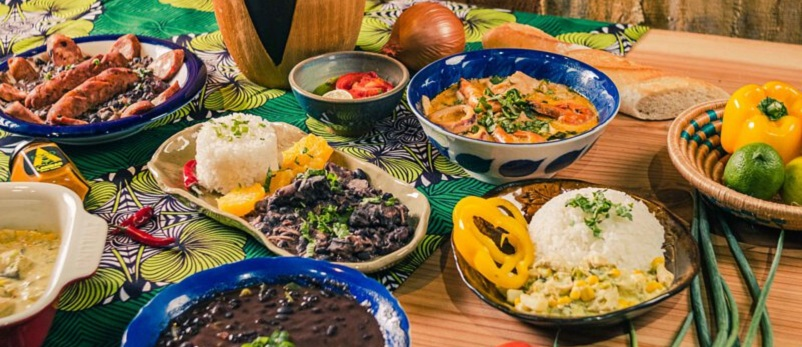
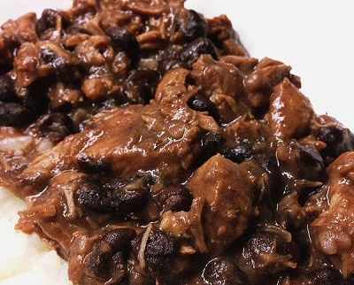
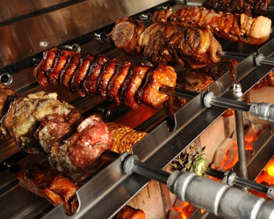
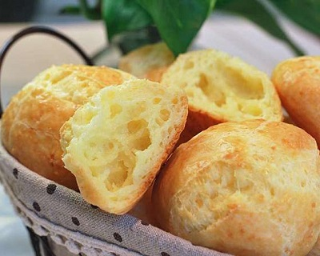

巴西Brazil


食物名稱：黑豆燉肉
食物介紹：
黑豆燉肉最早記載於伯南布哥州的累西腓，
於葡萄牙殖民時期發展出來。
這道菜最初是由奴隸蒐集主人剩下的食物，全部放在一起燉煮而成，所以也被稱為「奴隸餐」，
目前這道菜被視為巴西的國菜，
巴西黑豆燉肉中使用的豆類也因地區而異。
傳統上人們會在周六下午或週日午餐食用黑豆燉肉，意在成為一頓悠閒的正餐。
通常由家庭共享，並搭配觀看足球比賽或其他社交活動等活動。

食物名稱：巴西烤肉(Churrasco)
食物介紹：
當地人稱為「Churrasco」，是一種流行在南美的烤肉吃法，
8世紀末，巴西的牛仔們閑暇時經常以長劍串肉，在篝火上燒烤，沿襲至今，便形成了風味獨特的巴西烤肉，
經過五百多年的演變及歷代知名巴西烤肉廚師的傳承演化，
傳到現代，巴西烤肉成了巴西的國宴美食，
並更加精益求精，一種傳統文化，不斷地向世界各地傳播。

食物名稱：起司麵包球
食物介紹：
葡萄牙語「Pão de Queijo」意思是「Bread of Cheese起司麵包」，
在巴西是很常見的烘焙品，可以當早餐配咖啡，鹹香順口的滋味也很適合當零食或下酒點心，
主要用木薯粉而非麵粉製成的起司麵包外脆內軟Q，
口感有點像台灣人喜愛的韓國麻糬球，但口感更滑潤豐盈。